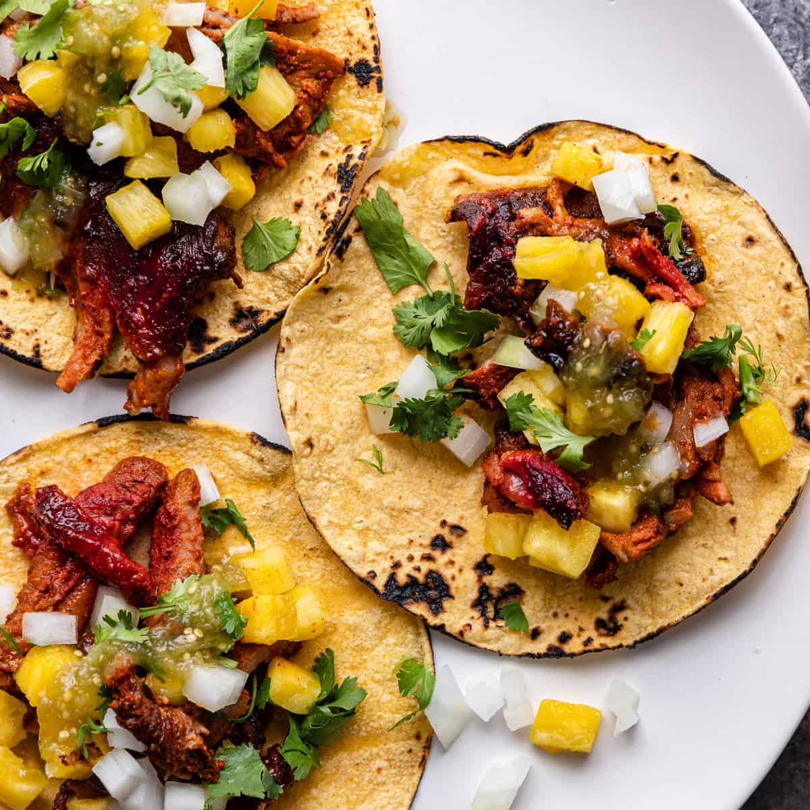

Al Pastor Tacos

Description
Tacos Al Pastor are thinly sliced pieces of marinated pork that make for the best taco.
Serve them up with some sliced onion, pineapple, and cilantro and you have yourself a fantastic dinner your family will devour.
Ingredients
- boneless pork butt
- onion roughly chopped
- pineapple
- a bunch of other stuff
Steps
- Use a sharp knife to slice pork into thin slices. Place in a large mixing bowl or resealable plastic bag.
- Cut the pineapple into 2-inch wide spears. Dice approximately 1 cup of pineapple and set the rest of the spears aside.
- Add the roughly chopped onion into a blender along with 1 cup of the cubed pineapple. Add in orange juice, white vinegar, chipotle, chile powder, garlic, salt, and oregano. Puree until smooth.
- Pour marinade over pork. Refrigerate and let marinate at least 4 hours.
- Heat a skillet or grill to high heat. Working in small batches, sear each slice of pork until cooked through, 2 to 4 minutes. At the same time, grill pineapple until lightly charred. Roughly chop the cooked pork and dice cooked pineapple.